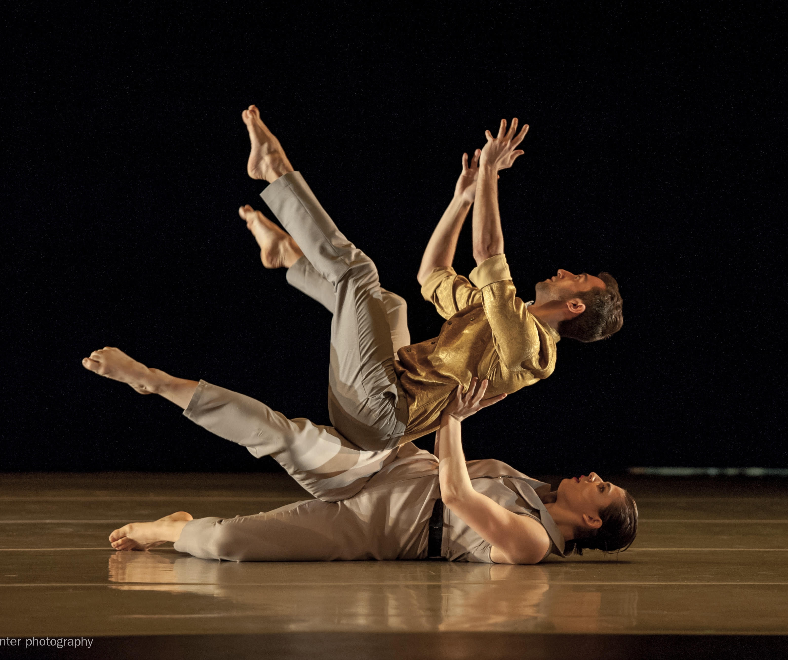
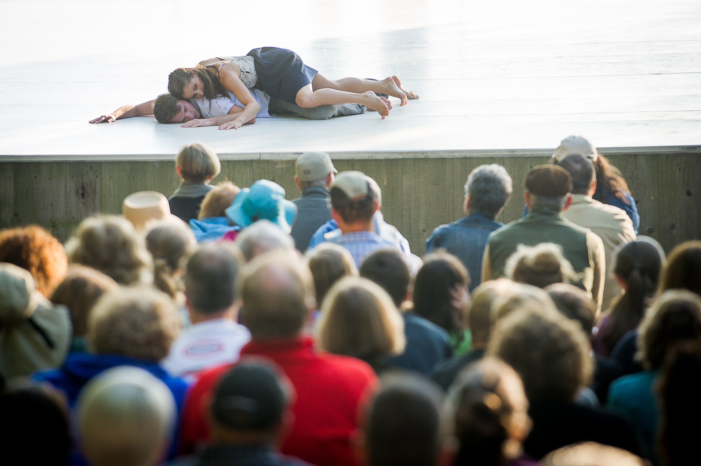
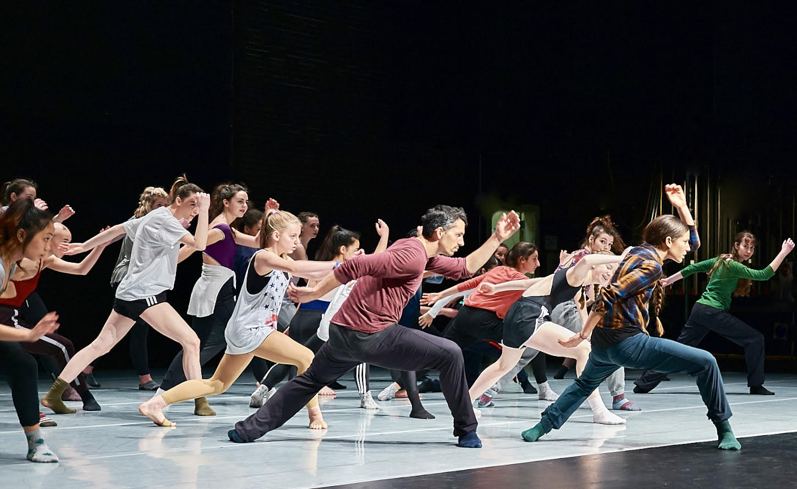
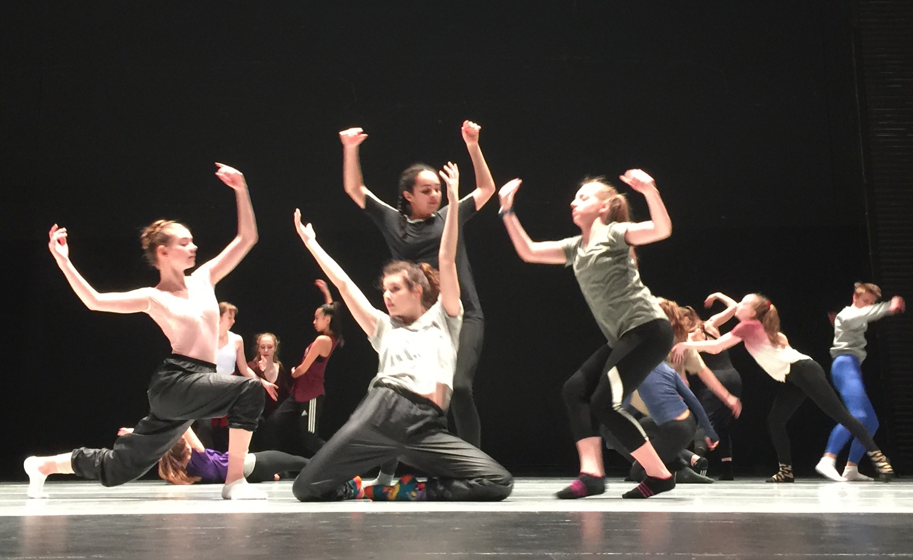

Seattle's Eastside · East King County, Washington
Dance belongs
to everyone.
"Just as inlets connect deep land to open sea, we bring dance into communities that have been out of reach — as a vehicle for human connection, community building, and embodied education."
Making contemporary dance accessible to residents and visitors to Seattle's Eastside.

FestivalCHOP SHOP: Bodies of Work
The only professional contemporary dance festival on Seattle's Eastside, returning in 2027.
Learn more →
IntensiveRISE
An intimate two-week dance intensive retreat in the beauty of the Pacific Northwest.
Learn more →
CommunityExperience Dance Program
Free lecture-demonstrations, movement classes, and open studio sessions across the Eastside.
Learn more →
YouthPublic School Programming
After-school creative movement for elementary students, taught by professional dance artists.
Learn more →